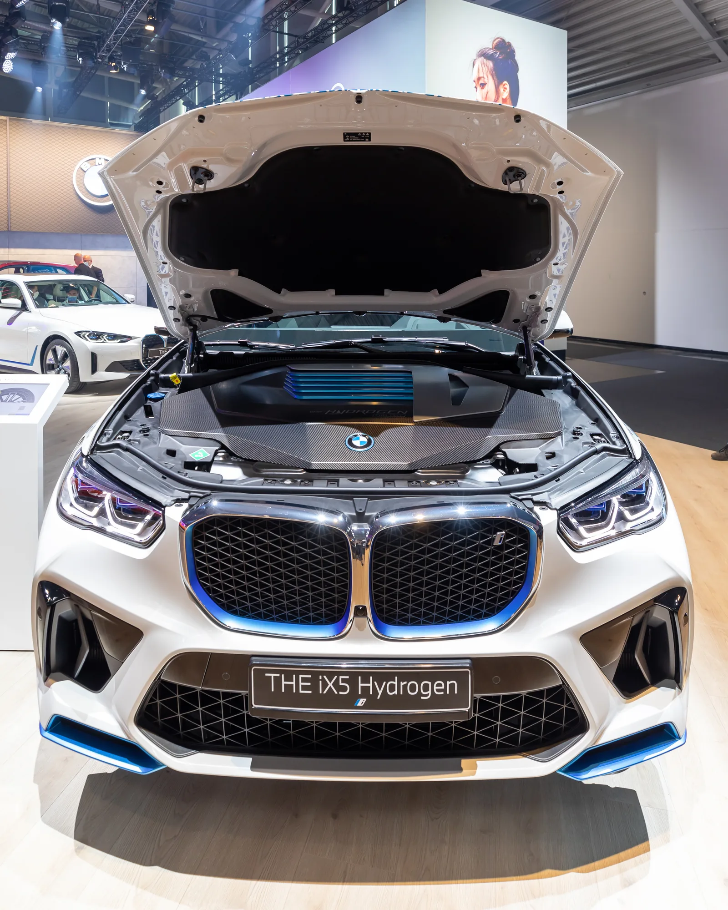
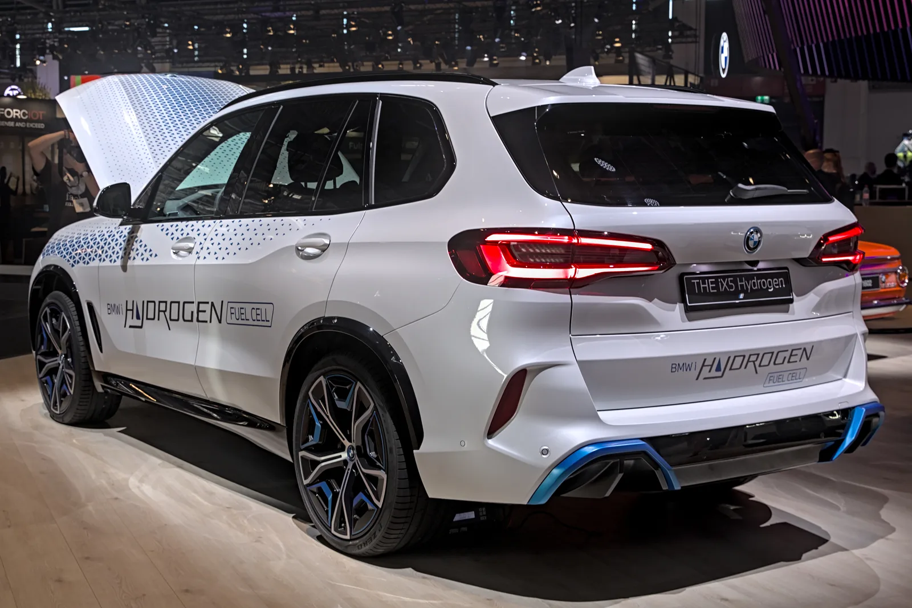

▲ BMW iX5 하이드로젠 파일럿 플릿(자료사진). 보닛 안에 수소연료전지 스택이 자리 잡고 있다. 순수전기 모델인 iX5(60 xDrive)와는 전혀 다른 차종이다 ⓒ Matti Blume, Wikimedia Commons (CC BY-SA 4.0)
1. 무슨 일이 있었나 — 헷갈리지 말아야 할 두 대의 iX5
먼저 짚어야 할 것이 있다. 'iX5'라는 이름을 쓰는 BMW 차가 현재 두 대다. 하나는 신형 5세대 X5 패밀리의 순수전기 버전인 'iX5 60 xDrive'로, 이미 유럽 공개를 마쳤다. 다른 하나가 이번 기사의 주인공인 수소연료전지차 'iX5 하이드로젠(iX5 Hydrogen)'이다. 이름은 비슷하지만 파워트레인부터 완전히 다른 별개의 차종이다.
BMW는 2022~2023년부터 iX5 하이드로젠 파일럿 플릿(시범 운행 차량) 약 100대를 전 세계에서 실증 운행해 왔다. 이번에 전해진 소식은 이 파일럿 플릿을 넘어, 2028년 양산형 출시를 목표로 실도로 테스트가 본격화됐다는 내용이다.

▲ iX5 하이드로젠 파일럿 플릿 후측면(자료사진). 차체의 'HYDROGEN FUEL CELL' 래핑은 시범 운행 차량에 적용된 것으로, 양산형은 별도 디자인을 갖출 예정이다 ⓒ Alexander Migl, Wikimedia Commons (CC BY-SA 4.0)
2. 목표는 0-100km/h 5초대 — 수소차도 "빠르다"
BMW가 이번에 밝힌 목표치 중 가장 눈에 띄는 것은 가속 성능이다. 0-100km/h(0-62mph) 기준 5초 이내를 목표로 잡았다. 그동안 수소연료전지차는 대체로 '친환경적이지만 굼뜨다'는 인식이 강했던 만큼, BMW의 이번 목표치는 수소차도 일반 가솔린 SUV 못지않은 주행 재미를 줄 수 있다는 메시지에 가깝다.
이 성능은 도요타와 10년 넘게 공동 개발해온 3세대 연료전지 시스템 덕분에 가능해졌다. 기존 파일럿 플릿에 쓰인 시스템보다 더 작고 강력해졌다는 것이 BMW 측 설명이다.
3. 주행거리·충전 — 750km와 5분
| 항목 | 목표치 |
|---|---|
| 0-100km/h 가속 | 5초 이내(목표) |
| WLTP 주행거리 | 최대 750km |
| 충전(수소 충전) 시간 | 5분 이내 |
| 연료전지 시스템 | 3세대, 도요타 공동 개발 |
| 수소탱크 | 7개 탱크, 차체 하부 평면 배치형 |
| 기본 사양 | xDrive 사륜구동, M 스포츠 패키지 |
| 양산 출시 | 2028년, BMW 최초 양산형 수소차 |
7개의 탱크를 차체 하부에 평면으로 배치하는 방식은 실내·트렁크 공간을 온전히 유지하기 위한 설계다. 완충까지 걸리는 시간은 5분 이내로, 일반 주유소에서 기름을 채우는 것과 큰 차이가 없는 수준을 목표로 한다. 이는 급속충전조차 수십 분이 걸리는 순수 전기차 대비 확실한 차별점이다.

▲ 신형 5세대 X5의 실내. 양산형 iX5 하이드로젠도 이 실내 구성을 공유할 것으로 예상된다 ⓒ BMW Group
4. 어떤 차체를 쓰나 — 신형 X5 패밀리의 다섯 번째 파워트레인
양산형 iX5 하이드로젠은 지금의 파일럿 플릿과 달리, 2026년 새로 공개된 5세대 X5(이른바 '뉴 클래스' 영향을 받은 신형) 차체를 기반으로 한다. BMW는 신형 X5를 가솔린, 디젤, 플러그인하이브리드, 순수전기(iX5), 수소연료전지(iX5 하이드로젠)까지 다섯 가지 파워트레인으로 운영하는 첫 모델로 만들 계획이며, 이 중 수소 버전만 2028년으로 출시 시점이 늦춰진다.

▲ 2026년 공개된 신형 5세대 X5. 2028년 양산되는 iX5 하이드로젠은 현재의 파일럿 플릿이 아닌 이 신형 차체를 기반으로 한다 ⓒ BMW Group
📍 정리하면 — BMW의 세 대의 X5
① 현행 4세대 X5(G05): 가솔린·디젤·PHEV 판매 중, 여기에 파일럿 플릿용 iX5 하이드로젠 시범차가 얹혀 실증 운행 중이다. ② iX5 60 xDrive: 2026년 공개된 신형 5세대 X5 패밀리의 순수전기 버전. ③ iX5 하이드로젠(양산형): 역시 신형 5세대 X5 차체를 기반으로 하되, 파워트레인만 수소연료전지로 바뀐 모델로 2028년 출시 예정이다.
5. 수소차 시장에서의 의미
현대차 넥쏘, 토요타 미라이 등 기존 양산 수소차들은 대체로 세단·해치백 체급에 머물러 있었다. BMW가 프리미엄 중형 SUV 체급에, 그것도 0-100km/h 5초대라는 스포티한 목표치를 내걸고 수소차 양산에 뛰어드는 것은 업계에서도 이례적이라는 평가가 나온다. 순수 전기차 전환이 유럽에서 예상보다 더디게 진행되는 상황에서, 수소를 대안 중 하나로 계속 육성하겠다는 BMW의 의지가 반영된 결과로 해석된다.
✅ 체크포인트
· iX5 하이드로젠은 순수전기 'iX5 60 xDrive'와 전혀 다른 별개의 수소연료전지차
· 목표는 0-100km/h 5초 이내, WLTP 주행거리 최대 750km, 충전 5분 이내
· 도요타와 공동 개발한 3세대 연료전지 시스템 탑재
· 양산형은 현재 파일럿 플릿이 아닌 2026년 공개된 신형 5세대 X5 차체 기반
· 2028년 출시 예정, BMW 최초의 양산형 수소차
6. 정리
BMW의 수소연료전지차 iX5 하이드로젠이 2028년 양산을 목표로 실도로 테스트에 들어갔다. 도요타와 공동 개발한 3세대 연료전지 시스템을 앞세워 0-100km/h 5초대, 주행거리 750km, 5분 이내 충전이라는 목표치를 내걸었다. 순수전기 모델인 iX5 60 xDrive와는 이름만 비슷할 뿐 완전히 다른 차종이며, 양산형은 2026년 공개된 신형 5세대 X5 차체를 기반으로 한다. BMW 최초의 양산형 수소차라는 점에서 업계의 관심이 쏠린다.